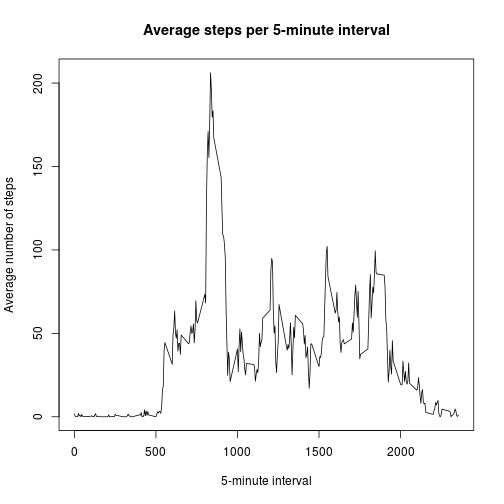
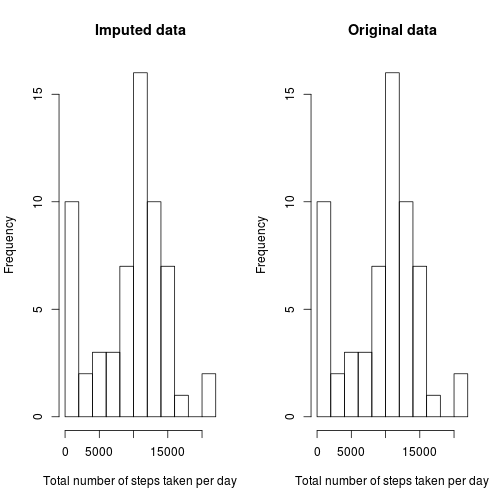
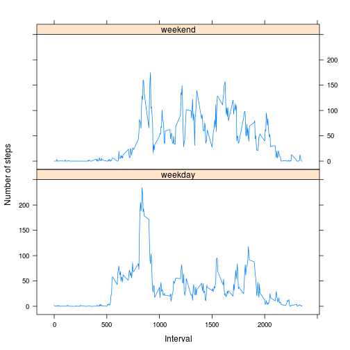

This assignment makes use of data from a personal activity monitoring device. The device collects data at 5 minute intervals throughout the day. The data consists of two months (61 days) of data from an anonymous individual collected during the months of October and November, 2012 and include the number of steps taken in 5 minute intervals each day.
The variables included in the dataset are:
steps: Number of steps taking in a 5-minute interval (missing
values are coded as NA)
date: The date on which the measurement was taken in YYYY-MM-DD format
interval: Identifier for the 5-minute interval in which measurement was taken
The dataset is stored in a comma-separated-value (CSV) file and there are a total of 17,568 observations in it -- 61 days with exactly 288 observations each.
The following R libraries are used to process the data
library(dplyr)
library(lubridate)
library(lattice)
The following code
zipfile <- "activity.zip"
csvfile <- "activity.csv"
# Ensure the zip file has been extracted
if (!file.exists(csvfile)) unzip(zipfile)
# Load and preprocess the data
data <- csvfile %>%
read.csv2(sep = ",", na.strings = "NA", colClasses=c("integer", "character", "integer")) %>%
mutate(date = ymd(date))
This R code extracts the mean and median number of steps taken per day,
ignoring missing values (NAs), and produces a histogram plot of total
steps per day.
steps_per_day <- data %>%
group_by(date) %>%
summarise(total = sum(steps, na.rm = TRUE))
mean_steps_per_day <- round(mean(steps_per_day$total), digits = 2)
median_steps_per_day <- median(steps_per_day$total)
par(mfrow = c(1,1))
hist(
steps_per_day$total,
breaks = 10,
main = "Histogram of total steps per day (original data)",
xlab = "Total number of steps taken per day"
)
abline(v = mean_steps_per_day, col="blue")
abline(v = median_steps_per_day, col="red")
legend(
x = "topright",
legend = c("Mean", "Median"),
text.col = c("blue","red"),
col = c("blue","red"),
lty = 1
)
The mean number of steps taken per day is 9354.23.
The median number of steps taken per day is 10395.
This R code plots the number of steps taken on each 5-minute interval, averaged across all days in the data set, ignoring missing values.
steps_per_interval <- data %>%
group_by(interval) %>%
summarise(average = mean(steps, na.rm = TRUE))
# time series plot (i.e. `type = "l"`)
# of the 5-minute interval (x-axis)
# and the number of steps taken, averaged across all days (y-axis)
plot(
steps_per_interval$interval,
steps_per_interval$average,
type = "l",
main = "Average steps per 5-minute interval",
xlab = "5-minute interval",
ylab = "Average number of steps"
)

# Find the interval with most steps on the average
top_interval <- arrange(steps_per_interval, desc(average))[1,]
On average across all the days in the dataset, interval 835 contains the highest number of steps, 206.17.
# Observations with values missing
incomplete_cases <- data[!complete.cases(data),]
n_incomplete_cases <- nrow(incomplete_cases)
# Days with at least one observation missing
incomplete_days <- data %>%
group_by(date) %>%
summarise(n = n(), nas = sum(is.na(steps))) %>%
filter(nas > 0)
# Days with all observations missing, ie. 288 NA's
# (288 * 5 min = 1400 min = 24 h)
fully_incomplete_days <- filter(incomplete_days, nas == 288)
# Count the rows
n_incomplete_days <- nrow(incomplete_days)
n_fully_incomplete_days <- nrow(fully_incomplete_days)
There are 2304 intervals with missing values
for steps (coded as NA). Their presence may introduce
bias into some calculations or summaries of the data.
There are 8 days with at least one steps value missing, of which 8 have all 288 values missing. It appears that when data is missing, it is missing for the whole day.
To fill in the blanks, NAs are substituted with the mean number of steps for that 5-minute interval. A new dataset is created that is equal to the original dataset but with the missing data filled in.
imputed_data <- data %>%
group_by(interval) %>%
mutate(
steps = ifelse(
is.na(steps),
as.integer(round(mean(steps, na.rm = TRUE))),
steps
)
)
imputed_steps_per_day <- data %>%
group_by(date) %>%
summarise(total = sum(steps, na.rm = TRUE))
par(mfrow = c(1,2))
hist(
imputed_steps_per_day$total,
breaks = 10,
main = "Imputed data",
xlab = "Total number of steps taken per day"
)
hist(
steps_per_day$total,
breaks = 10,
main = "Original data",
xlab = "Total number of steps taken per day"
)

imputed_mean_steps_per_day <- round(mean(imputed_steps_per_day$total), digits = 2)
imputed_median_steps_per_day <- median(imputed_steps_per_day$total)
| Steps per day | Mean | Median |
|---|---|---|
| Original data | 9354.23 | 10395 |
| Imputed data | 9354.23 | 10395 |
The values do not differ between original and imputed data. Because only whole days were missing from the original data, imputing with mean values has no impact on the estimated daily total number of steps.
To facilitate comparing differences in activity patterns between weekdays and weekends, a new factor variable with two levels -- "weekday" and "weekend" -- is added in the dataset, indicating whether a given date is a weekday or weekend day.
# For repeatability across locales, make sure we're using en_US.
invisible(Sys.setlocale("LC_TIME", "en_US.utf8"))
# 1. Create a new factor variable in the dataset with two levels
# -- "weekday" and "weekend"
# indicating whether a given date is a weekday or weekend day.
data <- mutate(data,
day_type = as.factor(
ifelse(weekdays(date, TRUE) %in% c("Sat", "Sun"), "weekend", "weekday")
)
)
# 2. Make a panel plot containing a time series plot (i.e. `type = "l"`)
# of the 5-minute interval (x-axis) and the average number of steps taken,
# averaged across all weekday days or weekend days (y-axis).
steps_per_interval <- data %>%
group_by(day_type, interval) %>%
summarise(average = mean(steps, na.rm = TRUE))
xyplot(
average ~ interval | day_type,
data = steps_per_interval,
type = "l",
layout = c(1,2),
xlab = "Interval",
ylab = "Number of steps"
)

Activity on weekends appears to be more uniformly distributed across the day while on weekdays the highest activity levels are concentrated towards the start of the day.